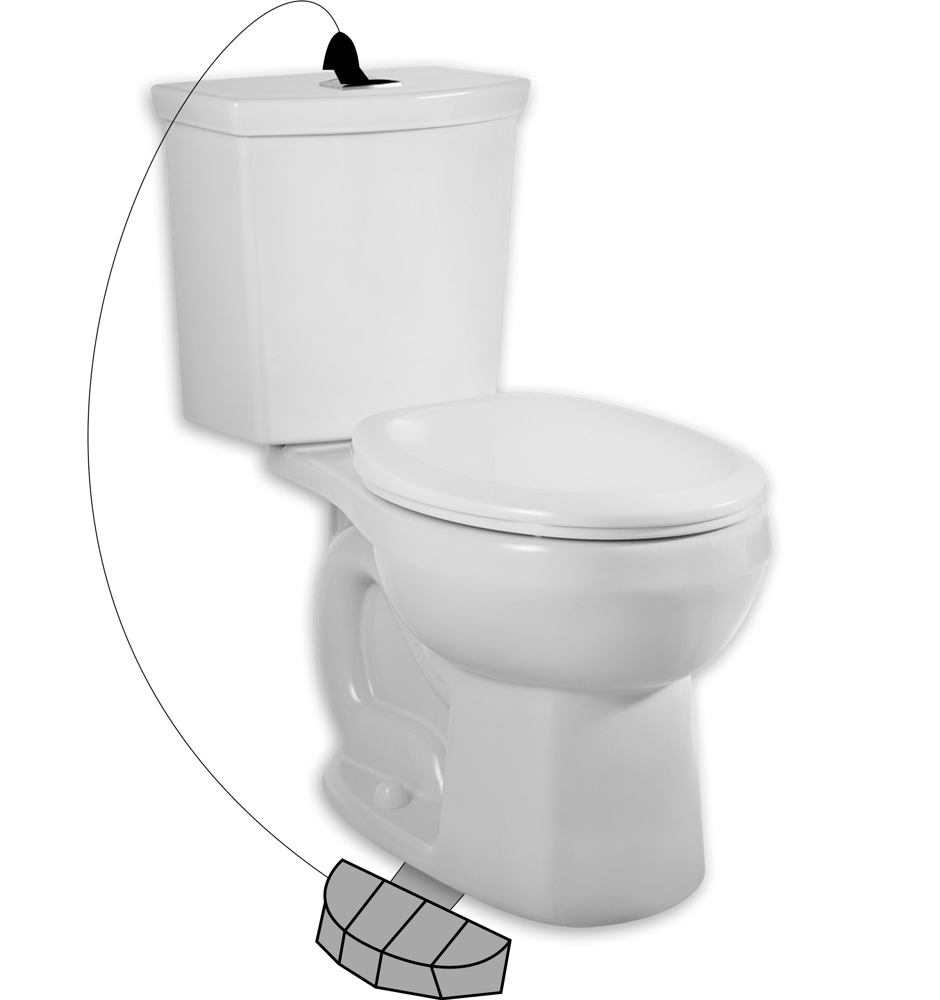

The PedaFlush is a simple device designed to lessen germ transmission in public toilets. Composed of a step-on pedal attached to the bottom right or left side of a toilet, the PedaFlush keeps physical contact to a minimum, making public toilets a safer, cleaner space.
Public toilets are often dirty.
When using public toilets, most of us try not to touch anything – and for good reason. Public bathroom surfaces are frequently contaminated with bacterial and viral pathogens, which have a slight chance of spreading infectious diseases. [1]
The problem with sensors
Despite being used in many public bathrooms, sensors are expensive and can fail often. Known issues include battery life, poor sensitivity to distance, and fluids clogging up the sensor, impairing its vision. [2]
PedaFlush benefits
Extremely simple
More than 3x cheaper than most traditional sensors
No electronic parts; less prone to damage
Highly customizable
PedaFlush
A safer, simpler, and more affordable flush for public toilets.

References:
Vardoulakis, S., Espinoza Oyarce, D. A., & Donner, E. (2022). Transmission of COVID-19 and other infectious diseases in public washrooms: A systematic review. Science of The Total Environment, 803, 149932. https://doi.org/10.1016/j.scitotenv.2021.149932
Edwards. P. (2015, September 3). The truth about bathroom sensors (and why they fail so often). Vox Media. https://www.vox.com/2015/9/3/9255805/bathroom-motion-sensors